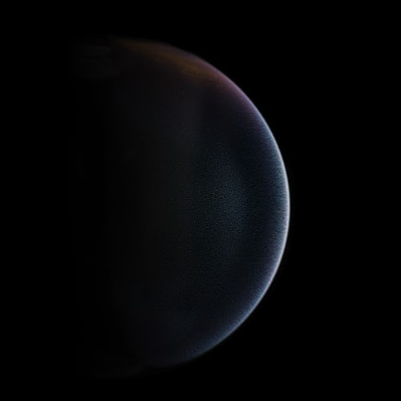
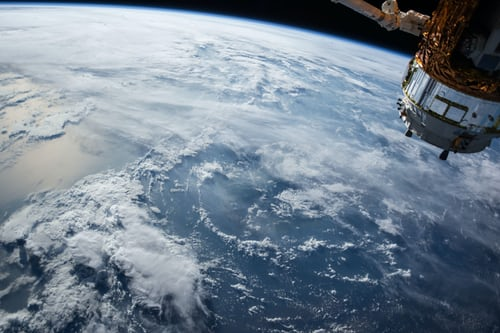
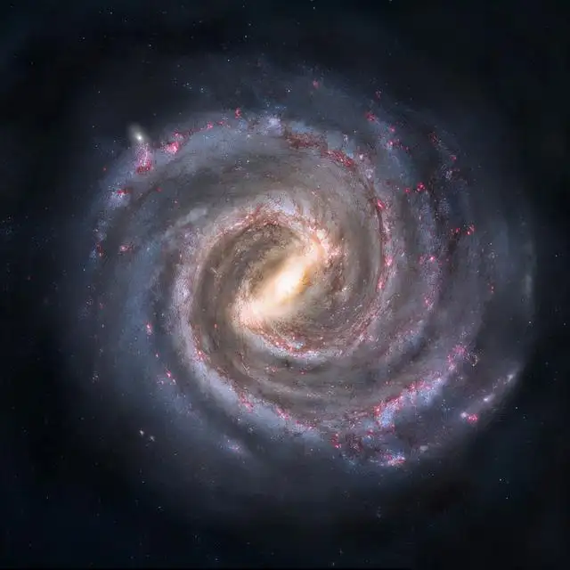
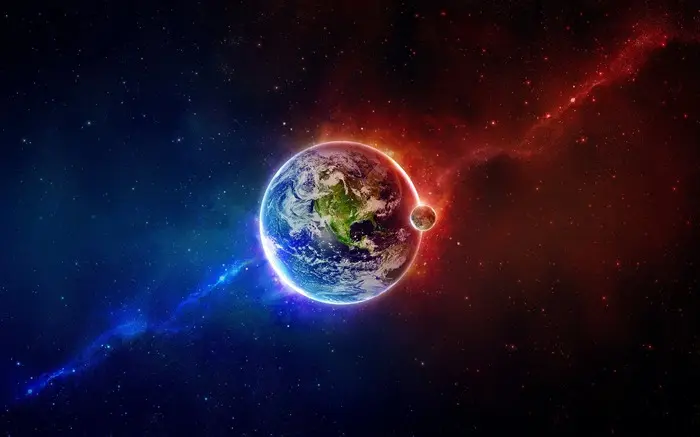
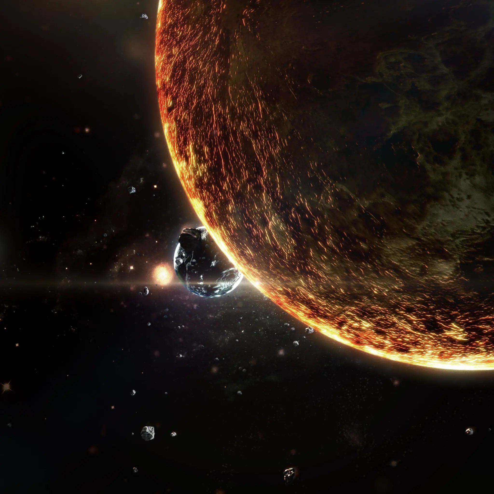

地球是距离太阳的第三颗行星，也是目前已知的唯一孕育和支持生命的天体。地球表面的大约 29.2% 是由大陆和岛屿组成的陆地。剩余的 70.8% 被水覆盖，大部分被海洋、海湾和其他咸水体覆盖，也被湖泊、河流和其他淡水覆盖，它们共同构成了水圈。地球的大部分极地地区都被冰覆盖。地球外层分为几个刚性构造板块，它们在数百万年的时间里在地表迁移，而其内部仍然保持活跃，有一个固体铁内核、一个产生地球磁场的液体外核，以及一个驱动板块构造的对流地幔。

外星生命一般指存在于地球以外的生命体。这个概念囊括了简单的细菌到具有高度智慧的外星人。研究和测试关于外星生命猜想的学科被称作地外生物学或天体生物学。自从二十世纪中叶以来，人类一直使用包括探测地球之外的电波、天文望远镜观测潜在的宜居行星等方法探测外星生命存在的迹象，但迄今为止并没有确切证据表明外星生命的存在。有人认为发现外星人的机率很小，也有很多人认为外星生命必定存在。大量关于外星人的报道、科幻小说和电影的充斥，使得外星生命的传闻变得有声有色。

“宇宙进化”是孙中山受到进化论的启发而创立的学说。孙中山认为,宇宙的进化有三时期——物质进化时期、物种进化时期和人类进化时期,第一时期进化到出现了地球,又经历了漫长的阶段,地球上的非生物物质才演化出原始生命——细胞,即“生元”。《孙文学说》中提出了“生元”说,对“生元”一词进行了界定,揭示“生元”的特点,以及“生元”与生物界、与人类社会的关系

天文学家在2010年4月宣布，我们的宇宙就像是俄罗斯套娃的一部分，可能栖身于一个黑洞内，而这个黑洞本身又是一个更大宇宙的一部分。反过来，迄今在宇宙中发现的所有黑洞可能都是通向其他世界的通道。

宇宙到底是什么结构，科学家至今没有搞清楚。一般解释大多是从物理学的角度来分析。从微观上讲：我们知道，物质最基本的微粒是分子，而分子是由不同元素的原子结合而成。无数的分子组成到一起就是我们肉眼能看得见的物质。物质当中有生命的，我们叫它是生物组织……不管它的结构如何，都是由原子——分子组成的。一个生命体中（比如一个细胞）包含有许多不同的物质，这些物质的组成又包含不同的原子。自然界的千千万万种物质的结构都是这样的。从宏观上来看，太阳系是由发光发热的巨大的核反应堆和围绕太阳旋转的几大行星组成，太阳系中的行星，都是围着太阳旋转的，不难发现，这种结构与原子的结构何其相似！银河系的结构正像是我们了解的其它物质一样，如果我们以更大的视点来看它，说它是某个巨型物质的一个分子或是一个组织细胞不是也很确切吗？

宇宙是无限大。 地球对于人类来说，已经很大，它的半径约637.2千米，但比起太阳来，却只有太阳半径的1/109。如果把和地球一样大的星球排起来，大约要200万个地球才能排列到太阳系中的冥王星，而太阳系只是银河中的一颗恒星。庞大的银河系中，大约有一千多亿颗像太阳那么大，甚至直径比太阳大几千倍以上的恒星。从银河系的一头跑到另一头，就连速度最快的光也要走上10万年。 银河系还不算大，至今已发现10亿多个和银河系同样庞大的恒星系统，还有更多更遥远的没有发现呢。 对于整个宇宙，我们的所有知识加起来都显得那么贫乏，任何想象都显得那么苍白！面对宇宙，我们只能说：“我想知道，但我尚不知道！”